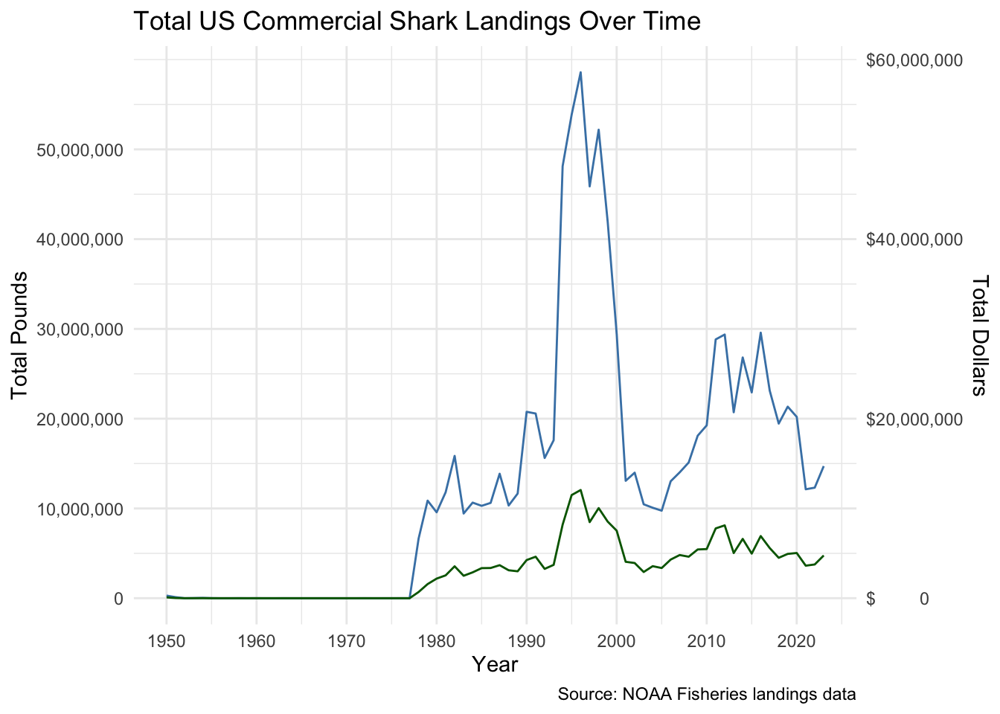
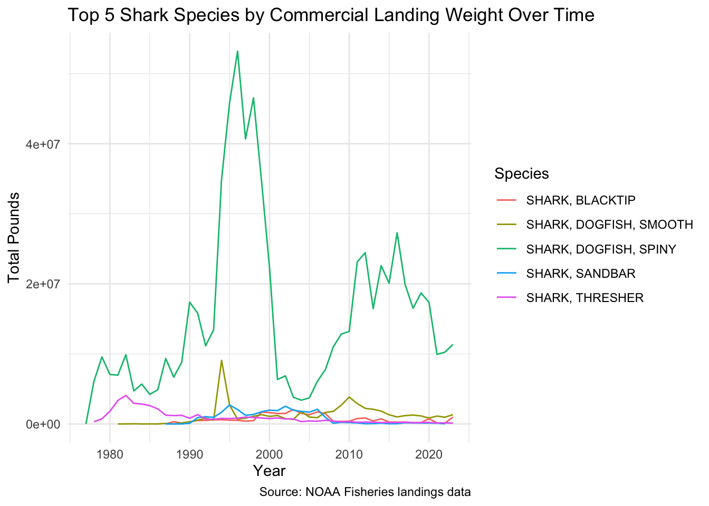
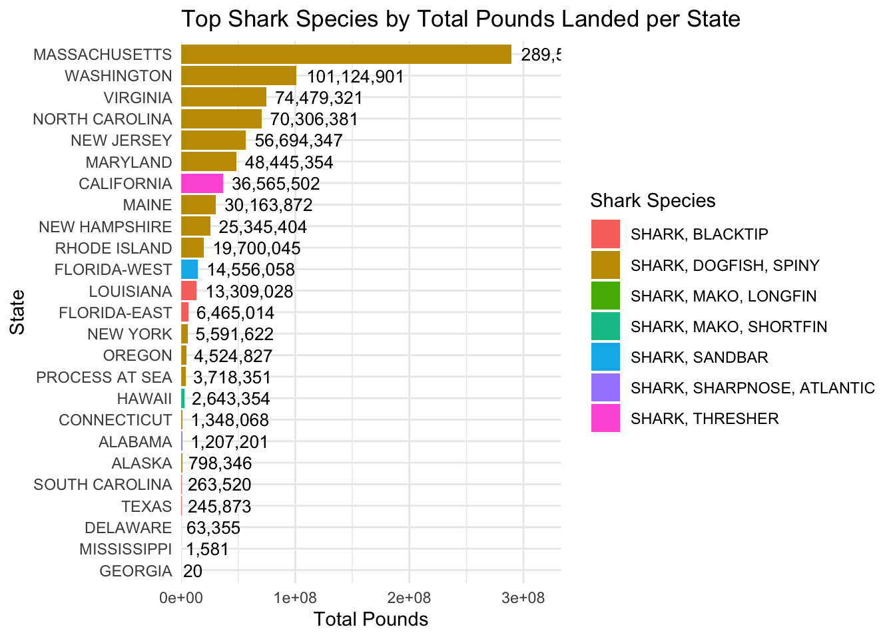
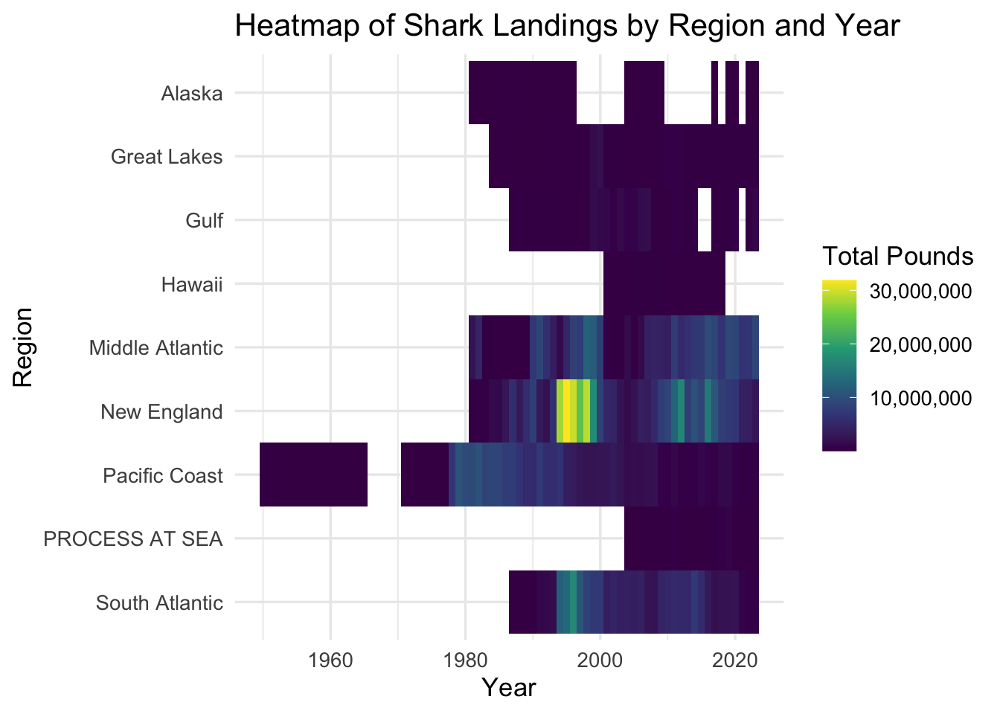
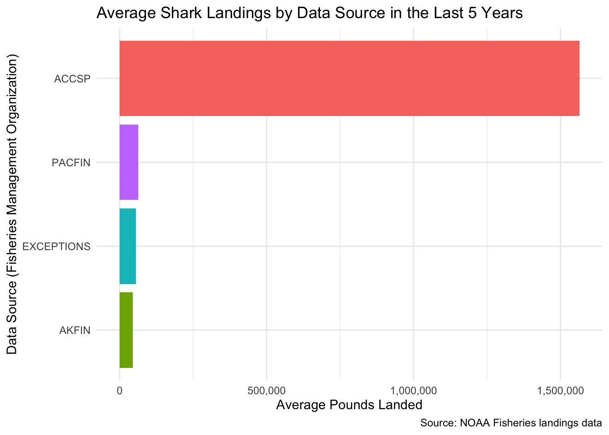

Exploring Trends in Shark Landings by US Commercial Fisheries
Data Description
Data Source.
My data comes from the NOAA Fisheries Commercial Landings Database, which tracks reported commercial landings of fishes. I utilized their website to select data for 12 large pelagic shark species landed across the U.S.
Variables and Data Types.
My data contains commercial fisheries landings from 1915 to 2023, and provides insight into trends in shark landings by state. The dataset includes the following variables: - Year, year of the recorded landings. -State, U.S. state - NMFS Name, National Marine Fisheries Service common name of each species - Pounds and Metric Tons, weight of sharks landed - Dollars, market value of the landed sharks - Confidentiality, whether or not the data is confidential - Collection, whether it was commercially or recreational caught - Scientific Name, scientific name of each species - Tsn, Taxonomic Serial Numbers are a numeric code for the species - Source,original source of the data
Research Questions
Are there trends in the value of shark landings (in dollars) over time?
Which shark species have the highest commercial landing weights (weight of all sharks cought) over time?
How do the prominent species landed vary by US state and region?
What data source (fisheries management organization) had the highest average shark landings in the last 5 years?
Data Cleaning
To get my dataset ready for visualizations, I first cleaned the variable names to make them easier to work with, and viewed a summary of the data to identify what needed cleaning. Then, I adjusted how certain pieces of information were stored: I made sure the year was treated as a number, removed symbols and commas from the weight and dollar columns so they could be calculated properly, and grouped together categories like state names and species names. I also removed rows that were marked “Confidential” since they didn’t include usable data, and deleted columns that weren’t relevant to my project. For any dollar or weight values that were recorded as zero, I marked them as missing so they wouldn’t affect the results. After this data cleaning, I saved the updated dataset and created a new dataset that showed the total pounds of sharks landed and total dollar value for each species, by state and year. I added a new column that grouped states into larger regions, such as “New England” or “Pacific Coast”—based on NOAA’s region definitions, and saved this dataset. I then created another dataset that totaled shark landings and dollar values by year alone. Finally, I created a wide-format version of the data, where each species had its own column, which may be helpful for certain and analysis.
I used help from AI (ChatGPT) to create the regions dataframe, and to make sure the tideous process of spelling all state names and regions was done correctly.
Data Visualization 1
This line graph shows total U.S. commercial shark landings from 1950 to 2020. The x-axis represents years in ten-year intervals, while ther are two lines on the y-axis. One line, in blue, shows the total pounds of sharks landed, steadily increasing through the 1980s and peaking in the early 1990s before declining. The other line, in dark green, shows the total dollar value of those landings, which generally follows the same trend as total catches. The y-axes on both sides of the plot display pounds and dollars, respectively. As we can see, the most commercial shark landings occurred around the late 1990s ( coinciding with the highest dollar value of landings), with a secondary peak during the 2010s. The number of shark landings must be monitored, as there is high variability in recent years.
Data Visualization 2
This line graph shows total commercial shark landings in pounds from 1950 to 2020 for the five most frequently caught species. Each species is a different color, layered to show how their relative contributions change over time. The predominantly caught shark over time is the Spiny Dogfish.

Data Visualization 3
This horizontal bar chart shows U.S. states on the vertical axis and total pounds of sharks landed on the horizontal axis. Each bar represents the shark species with the highest commercial landing weight in that state. Bars are color-coded by shark species, and the total pounds landed are labeled at the end of each bar. The chart highlights the variation in dominant caught shark species across states based on commercial landing weight in pounds. The predominantly caught shark across states is the Spiny Dogfish.

Data Visualization 4
This heatmap shows the total shark landings in pounds by U.S. coastal region from 1950 to 2022. Each tile represents a year-region combination, shaded by total pounds landed. Lighter shades indicate higher landings. The Pacific coast shows the earliest landings, while New England region shows highest landings (in 1990).

Data Visualization 5
This bar chart displays the average shark landing weights, measured in pounds, from various fisheries management organizations over the most recent five years (2015-2020). The Atlantic Coastal Cooperative Statistics Program has the highest average landings by a large margin (just over 1,600,000 lbs). The Pacific Fisheries Information Network, Exceptions, and the Alaska Fisheries Information Network are significantly lower than the Atlantic Coastal Cooperative Statistics Program. The chart provides a clear comparison of how shark landings differ across these organizations.
